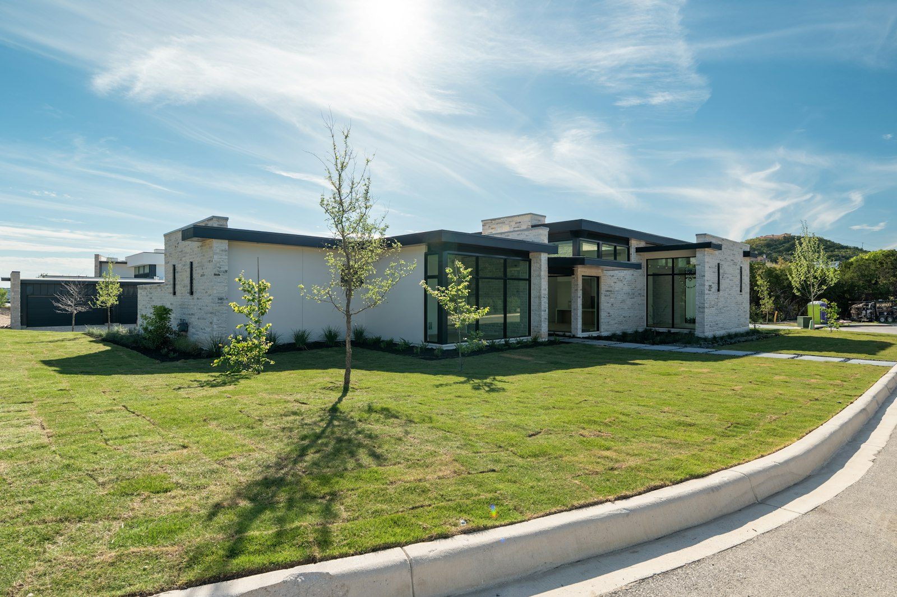

Framing & cottage builds
Start with a solid structure. Talk through your plans, site and build requirements.
Let’s talk about Framing & cottage builds
Winnipeg, Manitoba — Built with intent.
From the first frame to the finishing detail. Construction, renovations and carpentry for the way you want to live.
01 / WHAT WE CAN HELP WITH
Thoughtful work, from structural beginnings to the final finishing touch.
Start with a solid structure. Talk through your plans, site and build requirements.
Let’s talk about Framing & cottage buildsReimagine the spaces you use every day, with thoughtful details from room to room.
Let’s talk about Home renovationsMake a little more room for long summer evenings and time outside.
Let’s talk about Decks & outdoor livingMillwork, trim and the quiet details that bring a space together.
Let’s talk about Finish carpentry02 / THE POSSIBILITIES
A visual moodboard for your next project.
Licensed stock photography, not the business’s completed work. Select an image for a closer look.
03 / Winnipeg, Manitoba
345 Construction brings framing, renovation and finish carpentry together in Winnipeg, with cottage and remote build work among its services. Whether your project starts with a drawing or an idea, the first step is a conversation about what you want to build.
Start a conversationShare the idea, location and a few useful details.
Confirm what’s involved, preferences and practical requirements.
Agree on availability and next steps directly with the business.
THE NEXT STEP
A renovation, a new deck, a cottage taking shape. Start with the location, a few details and your ideal timing.
204-510-5454 Find the business on FacebookThis independent concept does not accept bookings or send enquiries. The phone and Facebook links open the business’s public contact routes.